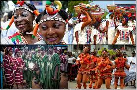

Nigeria, officially the Federal Republic of Nigeria, is a country in West Africa. It is the most populous country in Africa; geographically situated between the Sahel to the north, and the Gulf of Guinea to the south in the Atlantic Ocean; covering an area of 923,769 square kilometres (356,669 sq mi), with a population of over 211 million. Nigeria borders Niger in the north, Chad in the northeast, Cameroon in the east, and Benin in the west. Nigeria is a federal republic comprising 36 states and the Federal Capital Territory, where the capital, Abuja, is located. The largest city in Nigeria is Lagos, one of the largest metropolitan areas in the world and the second-largest in Africa.
Nigeria has been home to several indigenous pre-colonial states and kingdoms since the second millennium BC, with the Nok civilization in the 15th century BC marking the first internal unification in the country. The modern state originated with British colonialization in the 19th century, taking its present territorial shape with the merging of the Southern Nigeria Protectorate and Northern Nigeria Protectorate in 1914 by Lord Lugard. The British set up administrative and legal structures while practising indirect rule through traditional chiefdoms. Nigeria became a formally independent federation on October 1, 1960. It experienced a civil war from 1967 to 1970, followed by a succession of democratically-elected civilian governments and military dictatorships, until achieving a stable democracy in the 1999 presidential election; the 2015 election was the first time an incumbent president had lost re-election.
Nigeria is a multinational state inhabited by more than 250 ethnic groups speaking 500 distinct languages, all identifying with a wide variety of cultures. The three largest ethnic groups are the Hausa–Fulani in the north, Yoruba in the west, and Igbo in the east, together comprising over 60% of the total population. The official language is English, chosen to facilitate linguistic unity at the national level. Nigeria's constitution ensures freedom of religion and it is home to some of the world's largest Muslim and Christian populations, simultaneously.Nigeria is divided roughly in half between Muslims, who live mostly in the north, and Christians, who live mostly in the south; indigenous religions, such as those native to the Igbo and Yoruba ethnicities, are in the minority.
Nigeria's economy is the largest in Africa, the 27th-largest in the world by nominal GDP, and 25th-largest by PPP. Nigeria is often referred to as the Giant of Africa owing to its large population and economy and is considered to be an emerging market by the World Bank. It is a regional power in Africa, a middle power in international affairs, and is an emerging global power. However, the country ranks very low in the Human Development Index and remains one of the most corrupt nations in the world. Nigeria is a founding member of the African Union and a member of many international organizations, including the United Nations, the Commonwealth of Nations, the Economic Community of West African States, and OPEC. It is also a member of the informal MINT group of countries and is one of the Next Eleven economies.
Nigeria is a federal republic of 36 states and a federal capital territory, with a population of about 150 million. Thereore the following states stated below are the states we have in Nigeria
The flag of Federal Republic of Nigeria was designed in 1959 and first officially hoisted on 1 October 1960. The flag has three vertical bands of green, white, green. The two green stripes represent natural wealth, and the white represents peace and unity.
The flag was first officially flown on October 1, 1960, when Nigeria became an independent nation. The flag is a national symbol, an instrument of the state's sovereignty and a representation of authority. The flag illustrates the history, vision, and ambitions of the Nigerian people.
Nigeria flag consists of green and white colors that divide the flag vertically. While the green color on the fluctuating side of the flag symbolizes the agricultural lands and the green nature of the country's economically backbone, the white color in the center represents peace and unity.

Nigeria is a multiethnic country in Northern Africa. With nearly 200 million inhabitants, it also happens to be one of the world's largest countries by population. The culture of the country is diverse and tends to differ from north to south. Below are some of the most notable things about Nigerian culture.
Nigeria’s culture is made up of several ethnic groups that speak 527 different languages. The number of ethnic groups and dialects stand at more than 1,150. Some of the most prominent ethnic groups include the likes of the Fulani, Hausa, Igbo, Yoruba, and Ijaw. Minority ethnic groups live throughout the nation although higher concentrations of these groups live in the northern and the middle regions of Nigeria.
Nigerian traditions are wide and vary in the different cultures. For example, it is typical for Nigerians to have three weddings, unless they are getting married to foreigners. The first wedding is traditional, the second one being in a court, while the third is in the church or the mosque. The rationale behind these weddings is that the union needs to be recognized by religion, the law, and by tradition. Other traditions include the mother-in-law helping the daughter-in-law after giving birth and younger men going for apprenticeships with older and wealthier men.
It is mostly made up of meals that are high in carbohydrates, such as cassavas, rice, maize, yams, and plenty of vegetables. There are many ways that these meals are prepared. For example, the cassavas can be ground up and the flour used to make a delicious and inexpensive porridge. The yams can be mashed or fried in oil. Meat is another delicacy that is prepared into something known as suya (a form of meat resembling barbecue meat) and wild meat (from giraffes and antelopes). Most of the foods are spicy, especially in the west and the south. Other forms of traditional food include fufu, eba, okra, egusi, and ogbono. Drinks include traditional brews like palm wine.
Nigeria itself is home to several textile industries that go towards clothing the Nigerian people. Fashion is diverse and varies depending on the ethnic groups, culture, and religion. In recent time, the styles have evolved to more contemporary designs. Traditionally, cultures such as the Yoruba used to wear clothing such as gele (a cloth wrapped around the head by women), afbada (a robe for formal functions), and other forms of attire. Other cultures, such as the Igbo used to wear clothes only for modesty in past times, which is unlike other cultures where clothing has always been a symbol of status.
Families are a crucial aspect of Nigerian society and are typically larger than in the west. The larger number of families is because a higher number of children improves the social standing of a man. For this reason, newborns are regarded with joy and pride as they are the future. In some of Nigeria's northern states, polygamy is legal and men may marry several wives. However, none of the states in southern Nigeria allow this practice
Nigeria culture plays an important role in lives of separate individuals and the society as the whole. Culture helps to accumulates, control and organise the human experience. It is basically what makes a person human. When a person becomes a member of the society, he accumulates knowledge about language, symbols, values, norms, customs and traditions of that environment. In this country, individuals usually become a part of one or more ethnic groups in Nigeria. An person's immersion in a culture is determined by his/her socialization, familiarity with cultural heritage, as well as the development of his individual abilities.All these are usually achieved in the process of upbringing and education.
Culture unites people, integrates them, and ensures their strength as a community. Unfortunately, in our country, some subcultures oppose each other which lead to the spread of cultural differences in Nigeria. Cultural conflicts can arise within large communities as a result. To prevent this, it is important to control the formation of cultural values in a society. This is one of the tools used by the government to create a more conducive and secured environment.
Traditional foods are foods and dishes that are passed on through generations or which have been consumed for many generations. Traditional foods and dishes are traditional in nature, and may have a historic precedent in a national dish, regional cuisine[1] or local cuisine. Traditional foods and beverages may be produced as homemade, by restaurants and small manufacturers, and by large food processing plant facilities. Some traditional foods have geographical indications and traditional specialties in the European Union designations per European Union schemes of geographical indications and traditional specialties: Protected designation of origin (PDO), Protected geographical indication (PGI) and Traditional specialties guaranteed (TSG). These standards serve to promote and protect names of quality agricultural products and foodstuffs.